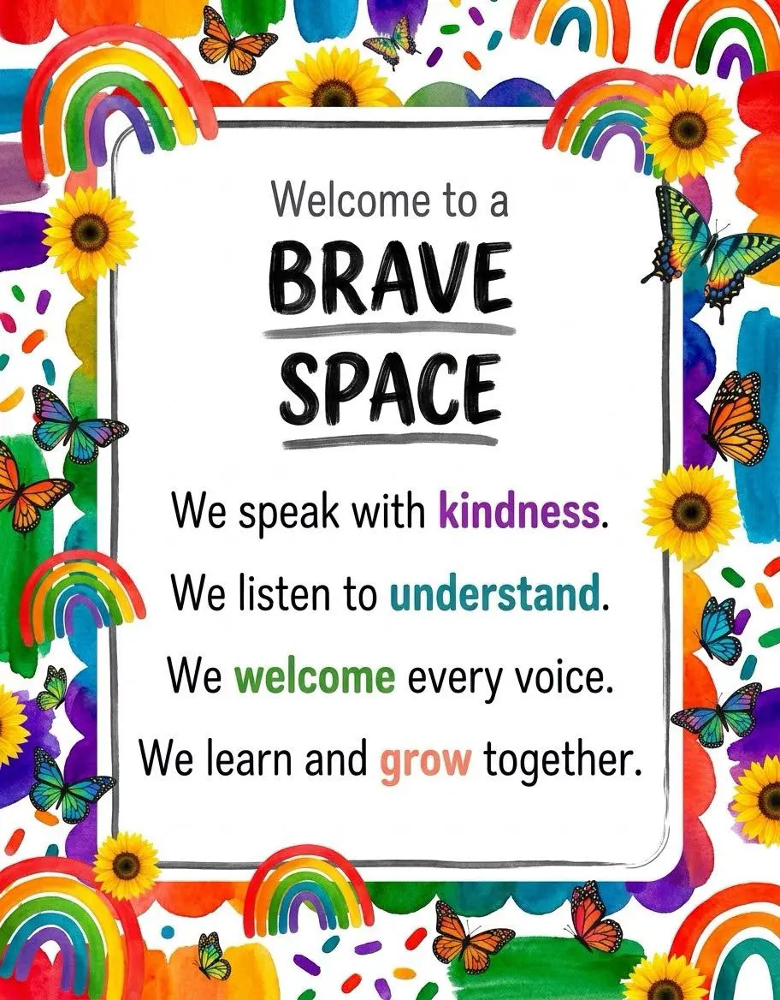

Trevor J. Traxler-Semeniuk, CD1, BSc, MASc, MBA
I am a Military Veteran, having completed 23 years of service as a Canadian Armed Forces Signal Officer. I embrace transformational, people-centric leadership, and wise compassion management. I approach my work endeavours, academic pursuits, life passions and human connections with a non-judgmental, open mind.
I am an advocate for change and kindness and passionate about elevating those who experience struggle, adversity and oppression. I share personal life experiences and show vulnerabilities to create safe spaces for others to share their experiences and seek support. I believe every human has a story that needs to be heard and that vulnerability builds connection and community which ultimately reduces stigma with increased understanding and empathy.
This statement by Toni Morrison, "If you are free, you need to free somebody else. If you have power, then your job is to empower somebody else," is my inspiration to always try recognizing and using the privileges and powers entrusted to me by society to free and empower others. My work is intrinsically motivated and altruistic in nature as I continually endeavour to make this world a little kinder, safer and more accessible for others by freely sharing my time, my kindness, and my knowledge.
"I am only one, but I am still one.
I cannot do everything, but still I can do something."
-- Helen Keller
As an autistic leader, I bring unique talents and perspectives to leadership roles that challenge theories and beliefs of leadership character traits. Autistic individuals may struggle yet overcome the social constructs inherent in leadership. Misconceptions and false beliefs persist and must be challenged. By broadening our current conceptualizations of leadership to include autistic characteristics and behaviours, assumptions will be challenged, and research gaps can be addressed.
I support the social model of disability which promotes and advocates for societal and organizational changes that eleiminate unnecessary barriers in our communities to be accepted and enabled to achieve their maximum. This model focuses on the idea that barriers in society, rather than individual differences, are responsible for creating challenges for autistic individuals. It emphasizes the need to address societal structures and attitudes that are barriers for autistics, to create an inclusive and supportive environment where all autistics can thrive and contribute to society.
Promoting and developing effective autistic leaders provides a community of strong role models, challenges negative perceptions around autism and reduces challenges and barriers in the workplace. However, it is important to recognize that the autistic spectrum is vast and those who can excel in leadership roles should be mentors and role models for other autistic leaders but also use their strengths, power, and talents to better the lives and experiences of the entire demographic of autistics who continue to be under-represented, under-employed and suffer many barriers and challenges within the workplace.
With understanding comes increased empathy and acceptance, thus, through my work, I try to collect, synthesize, and share critically-analyzed information to build a better understanding of not only the relationship between autism and leadership but autism in general.
The spectrum is infinite and so is our potential.

Some of my medium articles that describe my experience as an autistic leader.
-> I Am Autistic
-> The World Through an Autistic Lens
-> Autism, Adhd, and Stimulant Medication
-> From High School Drop Out to Senior Military Officer:
The Unlikely Life Path of a Complex Autistic in a Complicated World
Autism, Leadership and The Canadian Armed Forces
This paper aims to offer a comprehensive understanding of the intersection of autism and leadership, identify research gaps, and demonstrate the significant potential for autistic leaders to contribute to resolving complex national defence problems.
Journal Paper / Bilingual Presentation
______________
Character-based Leadership Approaches for Autistic
Members of the Canadian Armed Forces
Despite an established presence of autistic leaders in the CAF, efforts to support and fully integrate these individuals are lacking, thus further study is necessary to determine the appropriate support and enabling conditions for success. This paper postulates that character-based leadership (CBL) could be a suitable leadership theory for CAF leadership development programs that incorporate autistic perspectives.
Paper / Bilingual Presentation
_______________
A Systematic Approach to Feature Selection for
Encrypted Network Traffic Classification
During my MASc in Electrical Engineering, 2011-2013, I researched better ways of detecting covert channels and obfuscated data within encrypted network traffic. Based on my thesis I wrote and presented a conference paper for the SysCon
Thesis / Conference Paper / Presentation
_________________
Some of my personal projects and advocacy efforts
Autism and Pathological Demand Avoidance
_________________
Character-based Leadership
approaches for the Canadian Armed Forces
_________________
My Views on Leadership Influence
_________________
Music
I have a profound special interest in music which brings me unlimited joy and supports my mental health recovery and journey. I love listening, playing, discussing, analyzing, and creating various styles of music. I consider myself a musical artist as I create unique sounds and creations with my instruments, rather than a true musician which tends to imply a certain level of musicality, professionalism and instrument proficiency.
As such, I record half-joke, half-serious, semi-unprofessional, semi-talented, and never-perfect songs with my band, The Four Trevors, where I play guitar, drums, bass guitar, piano, harmonica, ukulele, and practically any other object that produces a controllable tone. I share my creations are on YouTube and Instagram.
The Four Trevors
📺 YouTube / 📸 Instagram
_________________
Gardening
My love and passion for growing plants and all things of botanical beauty pre-dates my earliest recollection. The special connection I have with nature and plants is hard to describe so instead I share photos of some of the beauty that I create and which surrounds me everyday on my instagram channel.
📸 Trevor the Plant Guy

Free AI Website Creator